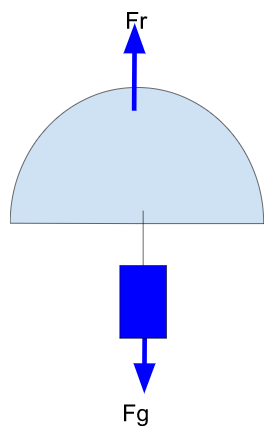

El objetivo de esta sección es aprender a calcular el radio de la hemiesfera que forma nuestro paracaídas.
Datos de Cálculo: Masa cansat entre 300 y 350 g, Tiempo de vuelo recomendado máximo 120 s, Velocidad de descenso entre 6 y 12 m/s (recomendadas entre 8 y 11 m/s).
Para calcular vamos a igualar la fuerza de resistencia del paracaídas (Fr) a el peso que mueve el paracaídas (Fg=mg) hacia el suelo. Cuando estén igualadas deja de acelerar y la velocidad se convierte en constante, esa es la velocidad de caída.
\( \sum F = m.a; F_{r}-F_{g}=m.a;\) como \(a=0\) para que \(V=cte \Rightarrow F_{r}=F_{g}\)
Siendo \( F_{g}=m_{cansat}.g\) (peso del cansat) y \(F_{r}=\frac{1}{2}.r.C_{d}.A.V²\) (Fuerza de resistencia del paracaídas) dónde:
- r = densidad del aire (1,22 Kg/m3)
- Cd = coeficiente de resistencia aerodinámico en paracaídas de forma hemiesférico, su valor es 0,62.
- A = superficie del paracaídas (en nuestro caso semiesfera), \(A=2.\pi.R²\)
- V = velocidad de descenso
Igualando ambas expresiones \(m_{cansat}.g=\frac{1}{2}.r.C_{d}.A.V²\), puedo despejar el área del paracaídas
\(A=\frac {2.m_{cansat}.g}{r.C_{d}.V²}\), como \(A=2.\pi.R²\), igualando \(2.\pi.R²=\frac {2.m_{cansat}.g}{r.C_{d}.V²}\), podemos despejar el Radio del paracaídas, \(R=\sqrt{\frac {2.m_{cansat}.g}{r.C_{d}.V².2.\pi}}\)
Para determinar la velocidad de caída y si la velocidad es constante (sin aceleración), tenemos que \(Velocidad=\frac{espacio}{tiempo}\), el cohete alcanza 1000 m de altura (espacio a recorrer) y el tiempo dijimos 120 s, por tanto …., ya tenemos la V. Además tenemos la masa de nuestro cansat (de 300g a 350g), con lo cual ya tenemos todo para calcular nuestro radio o diámetro de paracaídas.